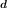
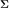

Generalized Nataf Transformation¶
The Generalized Nataf transformation is an isoprobabilistic
transformation (refer to ) which is used under the following context :
 is the input random vector, the
cumulative density functions of its components and
is the input random vector, the
cumulative density functions of its components and  its
copula, which is supposed to be elliptical.
its
copula, which is supposed to be elliptical.
Let us denote by  a deterministic vector,
 the limit state function of the
model,
the limit state function of the
model,
 the event considered here and g(,) = 0 its boundary.
the event considered here and g(,) = 0 its boundary.
One way to evaluate the probability content of the event
 :
:
(1)¶
is to use the Generalized Nataf transformation  which is a
diffeomorphism from
which is a
diffeomorphism from  into the standard space
into the standard space
 , where distributions are spherical, with zero mean,
unit variance and unit correlation matrix. The type of the spherical
distribution is the type of the elliptical copula .
, where distributions are spherical, with zero mean,
unit variance and unit correlation matrix. The type of the spherical
distribution is the type of the elliptical copula .
The Generalized Nataf transformation presented here is a generalisation
of the traditional Nataf transformation (see [nataf1962]): the reference
[lebrun2009a] shows that the Nataf transformation can be used
only if the copula of is normal. The Generalized Nataf
transformation (see [lebrun2009b]) extends the Nataf
transformation to elliptical copulas.
Let us recall some definitions.
A random vector in has an elliptical
distribution if and only if there exists a deterministic vector
 such that the characteristic function of
is a scalar function of the quadratic
form :
such that the characteristic function of
is a scalar function of the quadratic
form :
with  a symmetric positive definite matrix of
rank  . As is symmetric positive, it can
be written in the form ,
where
. As is symmetric positive, it can
be written in the form ,
where  is the diagonal matrix
with
and .
is the diagonal matrix
with
and .
With a specific choice of normalization for , in the case
of finite second moment, the covariance matrix of is
and  is then its linear
correlation matrix. The matrix is always well-defined,
even if the distribution has no finite second moment: even in this
case, we call it the correlation matrix of the distribution. We note
.
is then its linear
correlation matrix. The matrix is always well-defined,
even if the distribution has no finite second moment: even in this
case, we call it the correlation matrix of the distribution. We note
.
We denote by the
cumulative distribution function of the elliptical distribution
 .
.
An elliptical copula is the copula of an elliptical distribution .
The generic elliptical representative of an elliptical distribution family is the elliptical distribution whose cumulative distribution function is .
The standard spherical representative of an elliptical distribution family is the spherical distribution whose cumulative distribution function is .
The family of distributions with marginal cumulative distribution functions are and any elliptical copula is denoted by . The cumulative distribution function of this distribution is noted .
The random vector is supposed to be continuous and
with full rank. It is also supposed that its cumulative marginal
distribution functions are strictly increasing (so they
are bijective) and that the matrix of its elliptical
copula is symmetric positive definite.
Generalized Nataf transformation: Let in
be a continuous random vector following the
distribution . The
Generalized Nataf transformation is defined
by:
where the three transformations , and are given by:

where  is the cumulative distribution function of the
standard 1-dimensional elliptical distribution with characteristic
generator and is the inverse of the
Cholesky factor of .
is the cumulative distribution function of the
standard 1-dimensional elliptical distribution with characteristic
generator and is the inverse of the
Cholesky factor of .
The distribution of is the
generic elliptical representative associated to the copula of
. The step maps this distribution into its
standard representative, following exactly the same algebra as the
normal copula. Thus, in the Generalized Nataf standard space, the
random vector  follows the standard representative
distribution of the copula of the physical random vector
.
follows the standard representative
distribution of the copula of the physical random vector
.
If the copula of is normal, follows
the standard normal distribution with independent components.
API:
See the available Nataf transformations.
References:
Ditlevsen and H.O. Madsen, 2004, “Structural reliability methods,” Department of mechanical engineering technical university of Denmark - Maritime engineering, internet publication.
Goyet, 1998, “Sécurité probabiliste des structures - Fiabilité d’un élément de structure,” Collège de Polytechnique.
Der Kiureghian, P.L. Liu, 1986,”Structural Reliability Under Incomplete Probabilistic Information”, Journal of Engineering Mechanics, vol 112, no. 1, pp85-104.
H.O. Madsen, Krenk, S., Lind, N. C., 1986, “Methods of Structural Safety,” Prentice Hall.